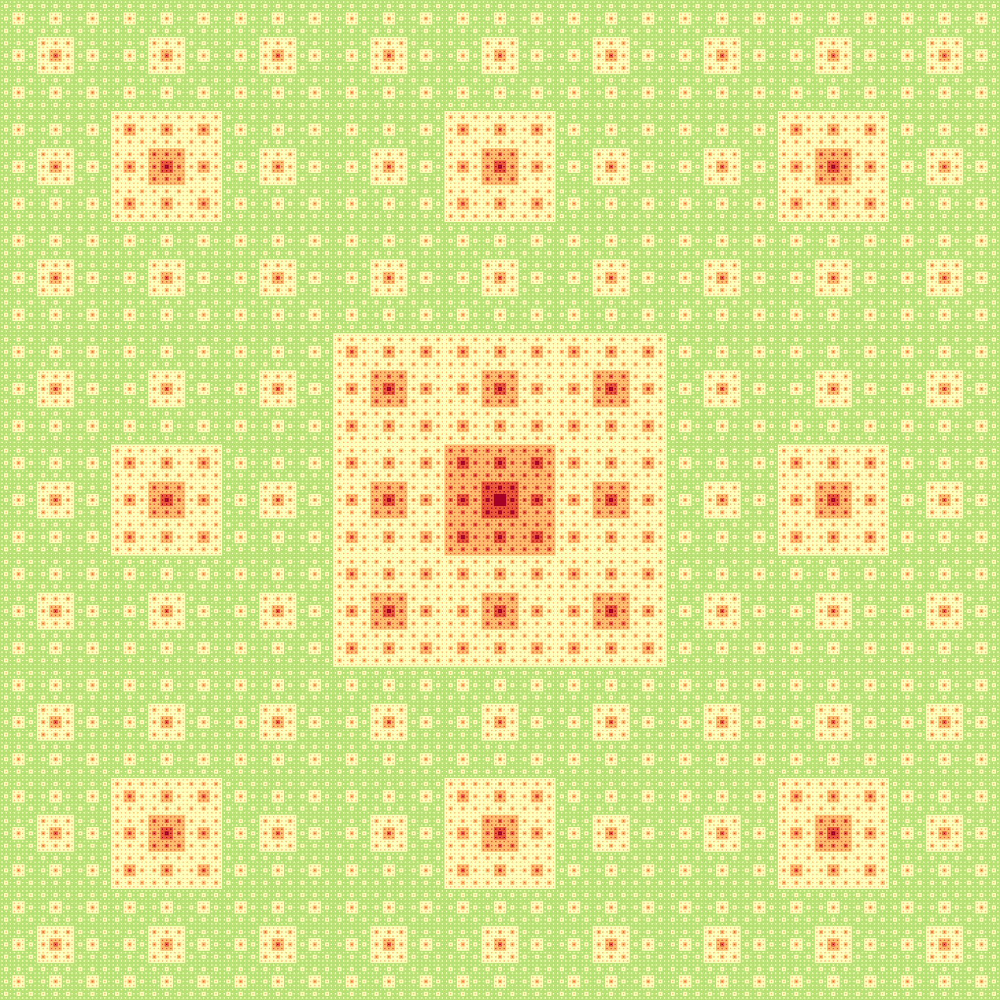
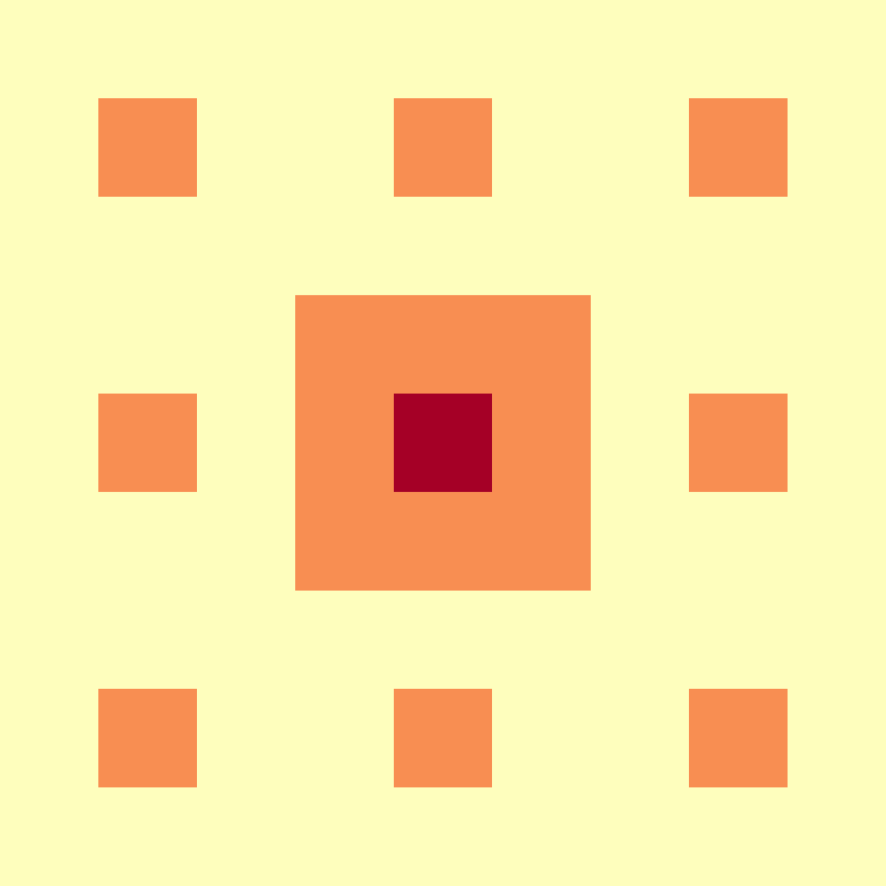
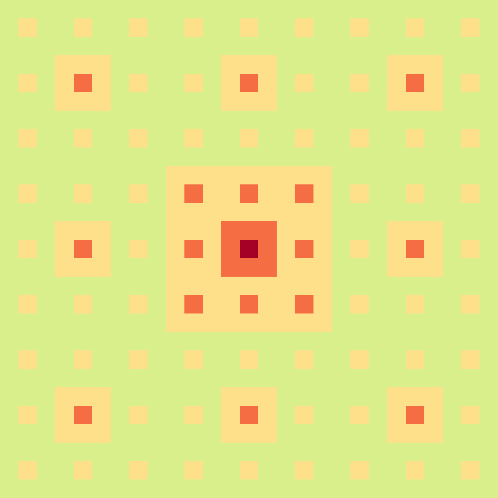
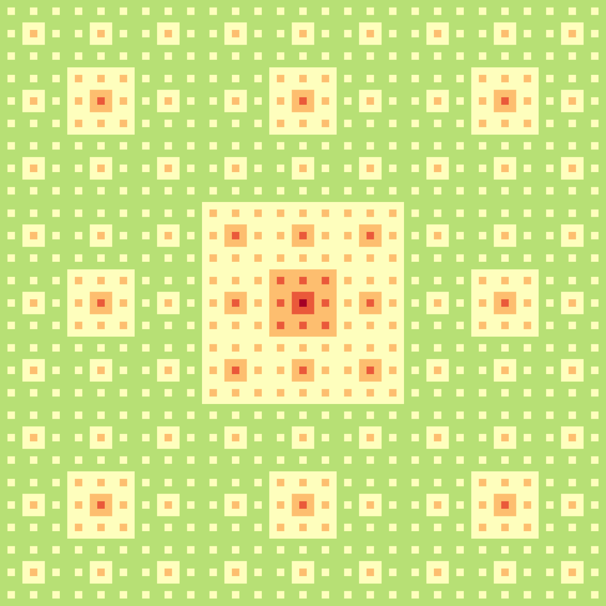
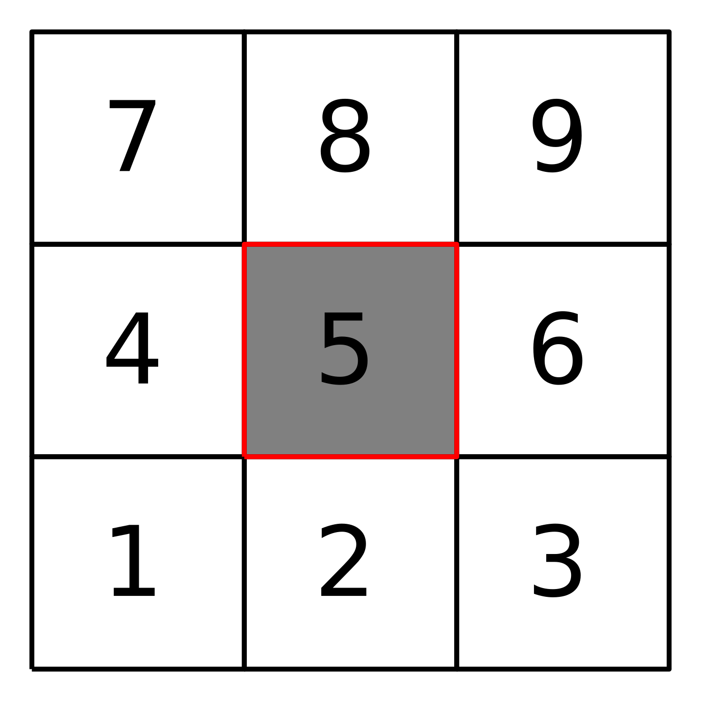
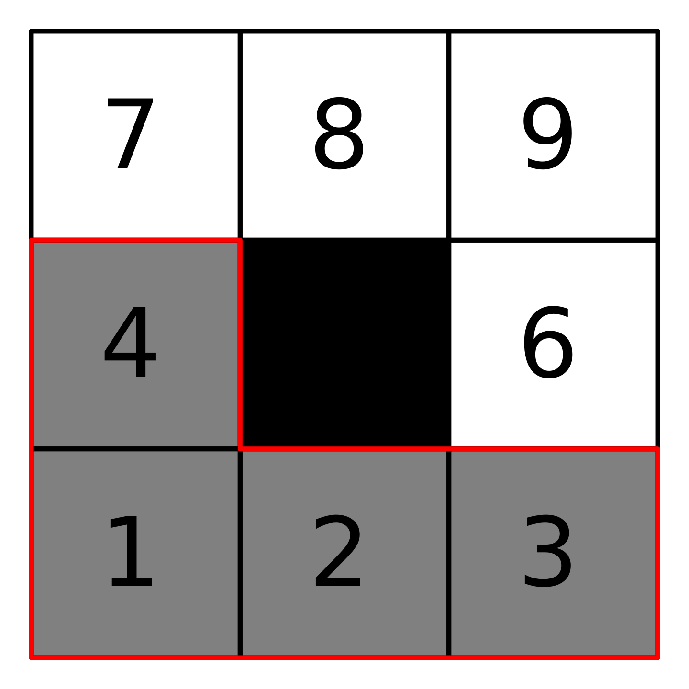
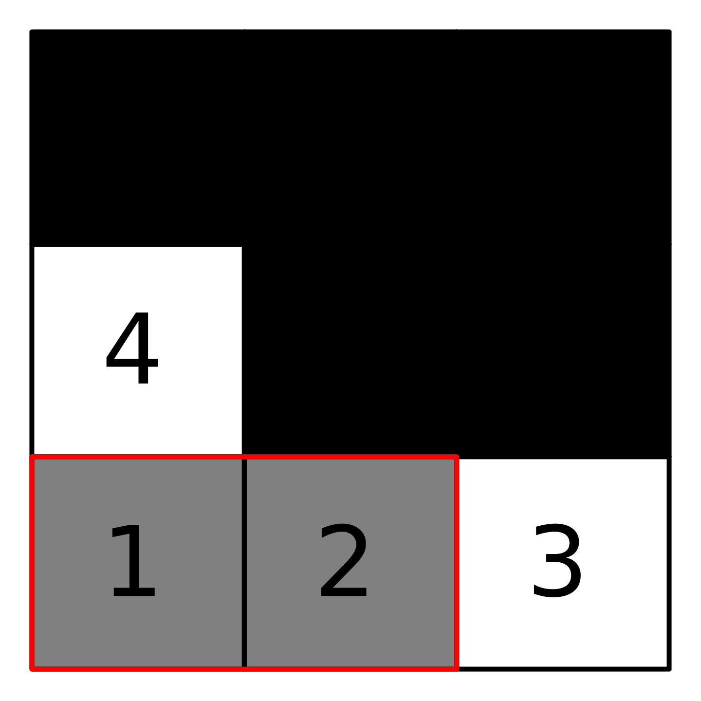
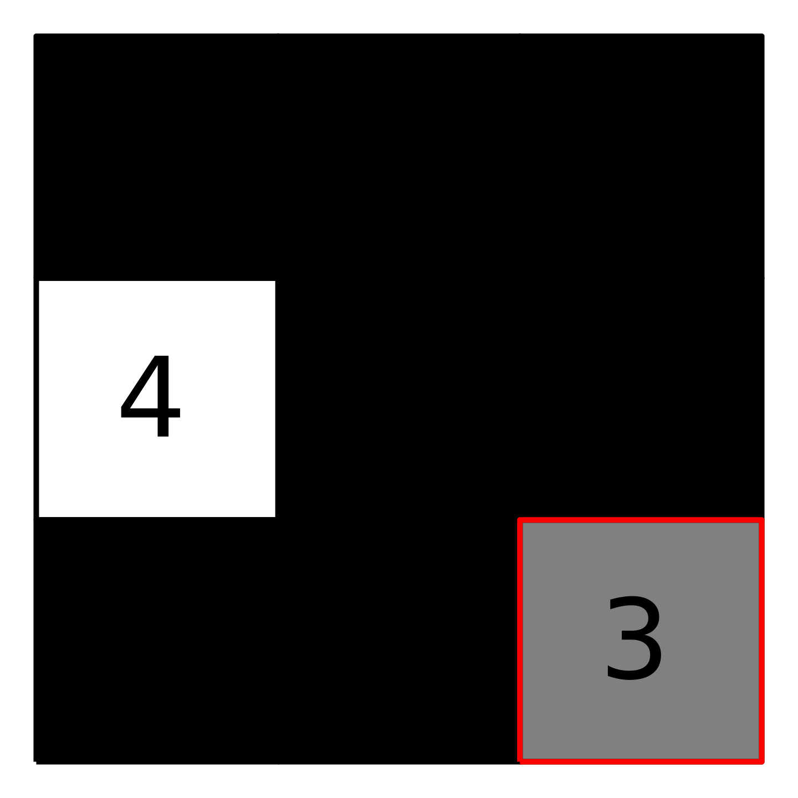
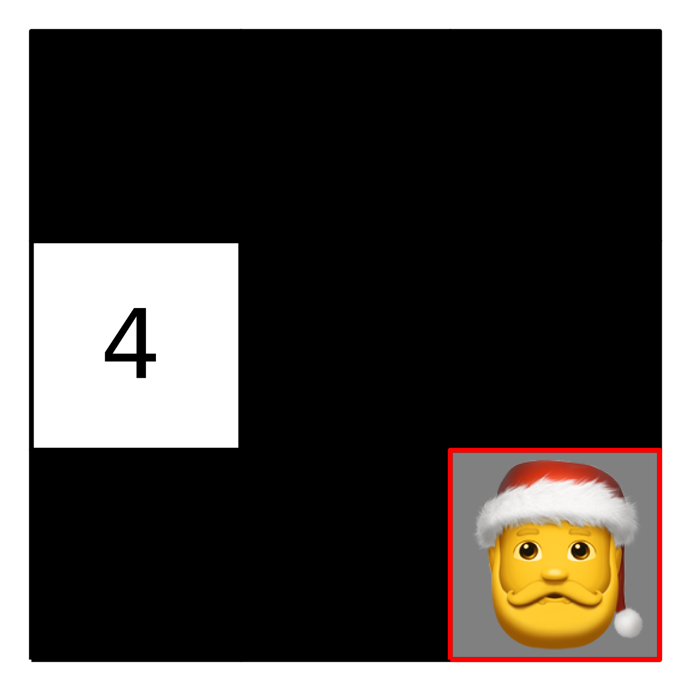
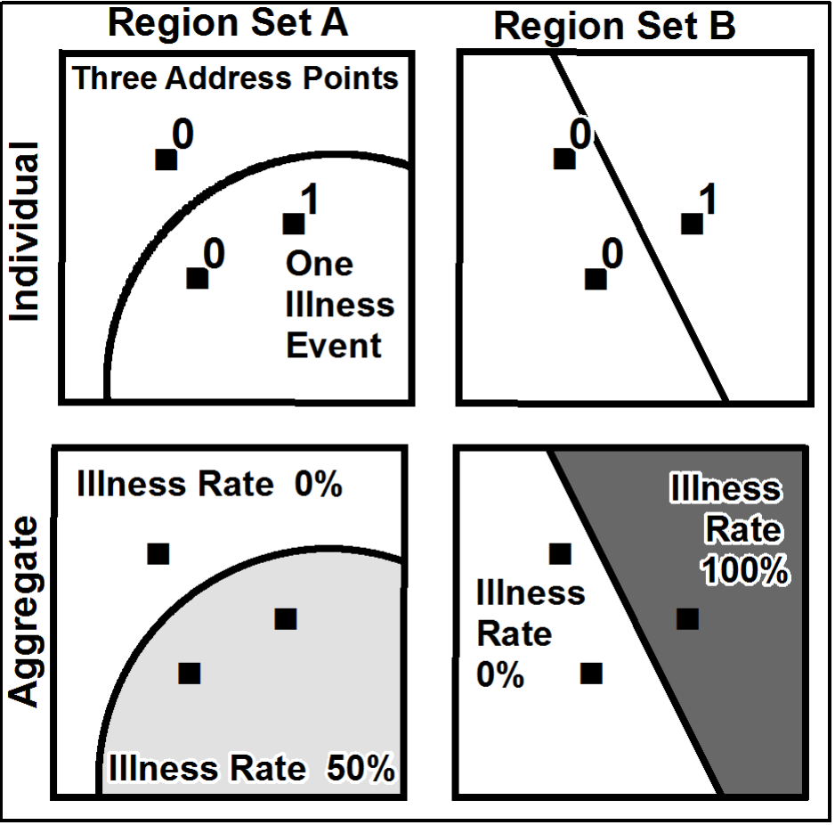

In the early eighties, fractals were everywhere, from the shape of clouds to the spatial organisation of galaxies. Now, scientists are more nuanced. Fractal is still a very important area of research, but there is no need for the world to be fractal in order to use fractal analysis.
Before we discuss the usefulness of fractals for geographers, it might be relevant to introduce them. Fractals were invented - discovered - by Benoît Mandelbrot, a French-American mathematician who believed that the world was not smooth, but rough. No matter how you look at it, every part of an object looks like the whole object. This is one way to describe what a fractal is. Another way is to say that a fractal has lots of detail at each scale. The two points of view are not opposite, as we can see.
This the picture of a simple fractal. This could well be a representation of a density map of population. The gradient colour scheme is showing the intensity of the density : higher values and lower values
If we look closely at one part, we see the same pattern.
we can still go deeper, and we still find out the same pattern of details.
When it comes to theoretical fractals, we can go deeper and deeper. But in practice, there is a minimum scale.
For example, a city is made up of buildings. A building is the smallest part of a city. Inside a building, it’s a whole different world.
At each scale, the details are arranged in the same way. This is the most important property of the fractal: their scale are bound together with specific ties.
In our example, the link is obvious and it appears when the fractal is being constructed.
To build our fractal, we need a generator a grid and a way to distribute the population in the space : Pi is a probability distribution. Their sum is 1.
The side of each cell is 1/3.
In your example P5=1/2 and the other P1=P2…=P8=P9=1/12.
In other words, half of the population is concentrated in the cell 5.
The first step is to decompose each cell with the generator.
In each new cell, the population is Pmother.Pson
The side of the cell is now (1/3)2.
At this step, the representation of the fractal is vey simple.
If we divide the fractal into smaller parts again, we can see much more detail. The side of the cell is (1/3)3.
To get the fractal, we keep decomposing it until we can’t do it any more.




The dimension of information
Fortunately, fractal theory isn’t just a way of making fancy pictures, it’s also a toolbox for measuring how the scales are related. Benoît Mandelbrot uses fractal dimensions to do this. There are a plethora of fractal dimensions, from the very theoretical to the more practical uses in Physics.
In this article, we focus on a specific dimension called the information dimension. It is based on the Shannon entropy, which is the number of Boolean questions we have to ask to find an element in an ensemble.
Imagine a situation where Santa Claus is located in cell from the generator. It’s probabity to be in a certain cell i is Pi.
Keep in mind that Pi=1/2 and The other probabilities are equally distributed.
How many questions do we ask to find him ?
The first legit question is : “Is Santa Claus 🎅 in the cell 5 ?”
If this is true, the game is over, one question is enough.
Otherwise, we divide the rest of the cells into two groups [1,2,3,4] and [6,7,8,9]
We then ask if Santa Claus 🎅 is in the first group [1,2,3,4].
If this is true, we have to divide the first group again into two groups ([1,2], [3,4]) and ask if Santa Claus is in [1,2].
If this is true, we have to ask if Santa Claus 🎅 is in cell 3.
Ok, the Santa Claus 🎅 is in cell 3.
In average, we have to wonder 1/2 * 1 + 1/2 * 3 = 2 questions to find Santa Claus 🎅.
In our case, it was possible to use a dichtomic approach because all the probabilities are a power of 2.
In general, Shanon’s entropy is used to estimate the number of dichotomous questions.
At first glance, it doesn’t seem natural, at least for me. We will give it some interpretation.
We can recognise an average in the first part.
The second part is a bit more tricky.
Logarithm is used to estimate the number of questions associated with the Pi.
In fact, the logarithm is the quantity of digits needed to write a number.
So the entropy, is the average of question needed to find the Santa Claus.
If we try to apply the formula to our example, we find 2 again.
Okay, this is interesting, but what’s up with fractals?
The information dimension is the number of additional questions that need to be asked to locate Santa Claus on a more precise scale. It is given by the Entropy of the generator.





\(H = - \sum_{i} p_i\)\(\log_2 (p_i)\)
And what about geography…
In geography, the role of scale is a major concern. It has been theorized under the concept of the Modifiable Areal Unit Problem (MAUP). The resulting summary values (e.g., totals, rates, proportions, densities) are influenced by both the shape and scale of the aggregation unit.
In this example from Wikipedia, we see a distribution of people and the distortion of rate calculations.
In the Region Set A, there is two units, one with 0% of illness rate and the other with 50 %.
In the Region Set B, there is still two units, one unit have 0% of illness rate but the other with 100 %.
It’s not a theoretical trap. Unfortunately, the MAUP could influence how policy makers coordinate their actions at different scales, from local to regional to national. It is one of the reasons why we can’t manage climate change.

widthheight =Math.min(width,window.innerHeight)
One of the trickiest problems in geography is how to describe a spatial population, specialy in Mainland France.
The density of population depends of the scale.
At each scale there are high and low density places.
But the deeper we go into the scale, the greater the variability of the scale.
We end up with a map of Paris.
So, instead of focusing on specific good scales, it’s better to think that all space scales are equally important and that the important information is in the ways they’re connected to each other.
In practice, there is no generator, it’s the reason why we use an estimation. We perform the entropy for different sides of the cells.
For example, we have computed the entropy around for four sides of cells [800m, 1600m, 3200m, 6400m]
The fractal dimension is the slope of the lesser squares regression line. It’s an estimation. In your case, Paris is not strictly fractal, because the points are not aligned. Nevertheless, the fractal dimension is always relevant and can be interpreted as the average marginal information across scales.
We have divided France in 25.6km side units and perform fractal analyis for each unit. The map displays the local fractal dimension of the population.
We measure the dispersed concentration of the population that density can reveal. So it is a fantastic tool for the regional planning to adapt the network to the population.
We highly recommend the book Fractal Geometry in Human Geography and Planning coordinated by Cecile Tannier, for which I had the pleasure of writing a few chapters with Cecile my Doctoral Advisor.